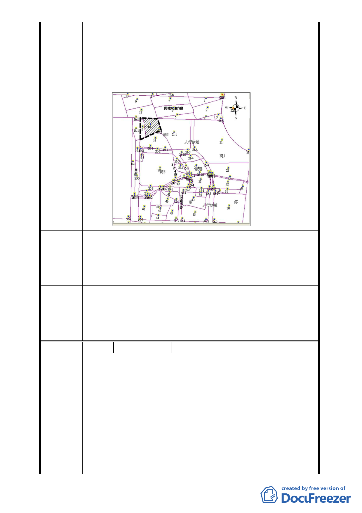

雙方同意就同區段 16、18 地號進行設計規劃合作興建房屋。」
精神相悖。蓮園建設股份有限公司現今所為顯與原合建契約精
神不符，本人當時所簽之土地使用權同意書係依合建契約書中
第十五條附則、第十二項之條件下為之，簽約至今未滿一年，
蓮園建設股份有限公司逕以當時簽署之土地使用權同意書申請
建造執照，該土地使用權同意書本人聲請無效。
本人希冀蓮園建設股份有限公司當依合約精神，續與其他
土地所有權人整合，以完整、較大規模土地方式進行建築設
建議辦法 計，使未來建築空間、停車空間都較理想。若簽約後一年到期，
蓮園建設股份有限公司努力整合無效，本人則依合約同意接受
以「臺北市內湖區文德段四小段16、18地號」合作興建房屋。
本案修正劃定更新地區範圍，應包括東側原 4 公尺寬道路用地
委員會決
議
與公園用地，以與本案變更計畫範圍一致；另為兼顧申請者與
案內更新地區土地所有權人之權益，本案將配合更新事業核定
公告細部計畫，並依「臺北好好看」開發計畫案規定時程開工，
否則仍維持原計畫不予變更。
編 號6
陳情人
謝王連、謝春明、謝春華等 3 人
聲明書
本人是文德四小 16、18 地號的地主，對於建設公司私自將
我的土地劃進更新範圍的舉動，本人表示強烈的不滿及堅決反
對！事實上，本次劃定範圍中的這幾筆土地二十幾年來，已經
有多家建設公司洽談合建事宜，為何至今仍無法成立？其原因
陳情理由 在於這些土地或建物持分的所有權人太多，大家的看法與利益
無法取得共識，以至於拖延至今。二十幾年來我的土地就一直
空在那邊，令我蒙受諸多損失。現下 16、18 地號兩筆地號已經
在貴局掛照申請建築執照中，與其等待這可能無疾而終的大面
積整併，我寧可先就自己的土地先行開發建築，對於我自己的
利益以及促進該地區市容景觀也有正面意義。
- 15 -